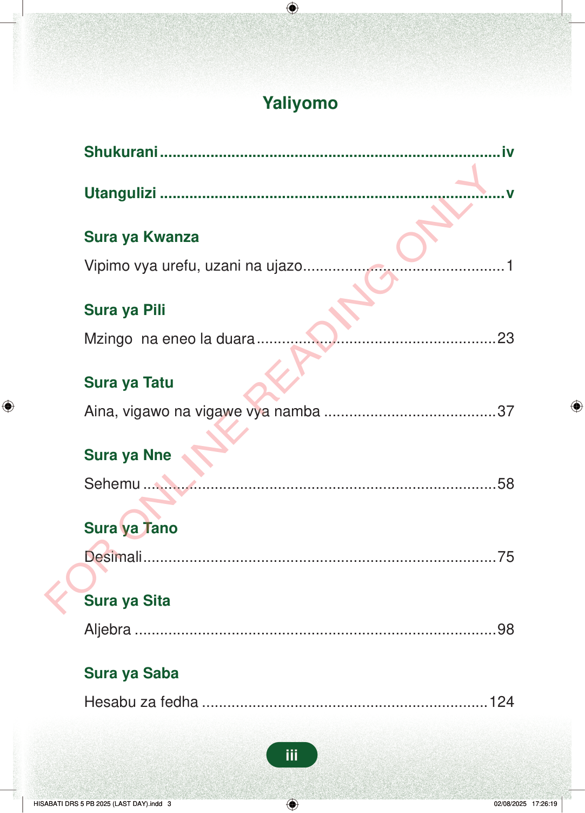

YaliyomoShukurani..................................................................................ivUtangulizi...................................................................................vSura ya KwanzaVipimo vya urefu, uzani na ujazo................................................1Sura ya PiliMzingo na eneo la duara..........................................................23Sura ya TatuAina, vigawo na vigawe vya namba..........................................37Sura ya NneSehemu.....................................................................................58Sura ya TanoDesimali....................................................................................75Sura ya SitaAljebra.......................................................................................98Sura ya SabaHesabu za fedha.....................................................................124iii
Yaliyomo
Shukurani..................................................................................iv
Utangulizi...................................................................................v
Sura ya Kwanza
Vipimo vya urefu, uzani na ujazo................................................1
Sura ya Pili
Mzingo na eneo la duara..........................................................23
Sura ya Tatu
Aina, vigawo na vigawe vya namba..........................................37
Sura ya Nne
Sehemu.....................................................................................58
Sura ya Tano
Desimali....................................................................................75
Sura ya Sita
Aljebra.......................................................................................98
Sura ya Saba
Hesabu za fedha.....................................................................124
iii
FOR ONLINE READING ONLYYaliyomoShukurani ivUtangulizi vSura ya KwanzaVipimo vya urefu, uzani na ujazo1Sura ya PiliMzingo na eneo la duara23Sura ya TatuAina, vigawo na vigawe vya namba37Sura ya NneSehemu58Sura ya TanoDesimali75Sura ya SitaAljebra98Sura ya SabaHesabu za fedha124